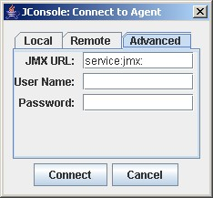
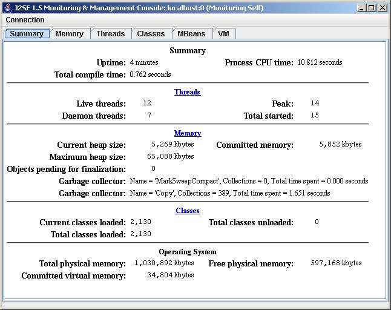
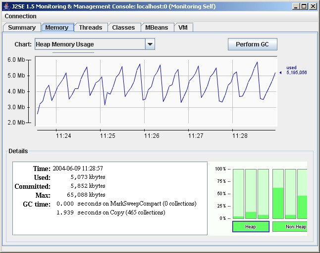
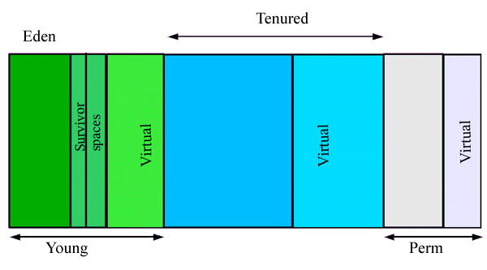
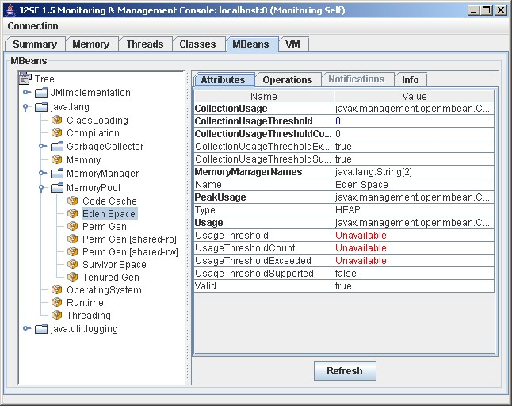
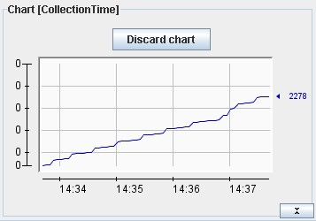

Jconsole is a JMX-compliant monitoring tool. It uses the extensive JMX instrumentation of the Java virtual machine to provide information on performance and resource consumption of applications running on the Java platform.
The jconsole executable is in
JDK_HOME/bin, where
JDK_HOME is the directory where the JDK is
installed. If this directory is on your system path, you can
start the tool by simply typing jconsole in a command
(shell) prompt. Otherwise, you have to type the full path to the
executable file.
You can use jconsole to monitor both local applications (those
running on the same system as jconsole) and remote applications (those
running on other systems).
Note: Using jconsole to monitor a local application is useful for development
and prototyping, but is not recommended for production environments,
because jconsole itself consumes significant system
resources. Remote monitoring is recommended to isolate the
jconsole application from the platform being
monitored.
For a complete reference on jconsole command syntax, see jconsole - Java Monitoring and
Management Console.
To monitor a local application, it must be running with the same user ID as jconsole. The command syntax to start jconsole for local monitoring is:
jconsole [processID]
where processID is the application's process ID (PID). To determine an application's PID:
ps command to
find the PID of java.You can also use the jps command-line utility to determine PIDs.
For example, if you determined that the process ID of the Notepad application is 2956, then you would start jconsole as follows:
jconsole 2956
Both jconsole and the application must by executed
by the same user name. The management and monitoring system uses
the operating system's file permissions.
If you don't specify a process ID, jconsole will automatically detect all local Java applications, and display a dialog box that lets you select the one you want to monitor (see the next section).
For more information, see Local JMX Monitoring and Management.
To start jconsole for remote monitoring, use this command syntax:
jconsole [hostName:portNum]
where hostName is the name of the system running the application and portNum is the port number you specified when you enabled the JMX agent when you started the JVM. For more information, see Remote JMX Monitoring and Management.
If you do not specify a host name/port number combination, then jconsole will display a connection dialog box (see the next section) enabling you to enter a host name and port number.
If you start jconsole with arguments specifying a JMX agent to which to connect, it
will automatically start monitoring the specified JVM. You can connect to a different host at any time by choosing
Connection | New Connection. and entering the necessary
information.
Otherwise,
if you do not provide any arguments when you start jconsole, the first thing you see is the
connection dialog box. This dialog box has three tabs:
The local tab lists any JVMs running on the local system started with the same user ID as jconsole, along with their process ID and class/argument information. Select the application you want to monitor, then click Connect.

To monitor a remote JVM, enter:
For information on setting the port number of the JMX agent, see Enabling the JMX Management Agent. For information on user names and passwords, see Using Password and Access Files.
To monitor the JVM running jconsole, simply click Connect, using host localhost and the port zero (0).

The advanced tab enables you to connect to other JMX agents (MBean servers) by specifying their JMX URL, and the user name and password. The syntax of a JMX URL is described in the API documentation for javax.management.remote.JMXServiceURL.
Note: If the JMX agent is using in a connector which is not
included in the Java platform, you need to add the connector classes
to the classpath when running jconsole as follow:
jconsole -J-Djava.class.path=JAVA_HOME/lib/jconsole.jar:JAVA_HOME/lib/tools.jar:connector-path
where JAVA_HOME is the directory containing the JDK and connector-path is the directory or the jar file containing the classes not included in JDK 5.0 to be used by jconsole for connecting to a JMX agent.
The jconsole interface is composed of six tabs:
The following sections provide information on each tab.
The Summary tab displays some key monitoring information on thread usage, memory consumption, and class loading, plus information on the JVM and operating system.

The Memory tab provides information on memory consumption and memory pools.

The chart shows the JVM's memory use versus time, for heap and non-heap memory, and for specific memory pools. The memory pools available depend on the JVM being used. For the HotSpot JVM, the pools are:
For more information on these memory pools, see Garbage Collection.
The Details area shows several current memory metrics:
The bar chart at the lower right shows memory consumed by the memory pools in heap and non-heap memory. The bar will turn red when the memory used exceeds the memory usage threshold. You can set the memory usage threshold through an attribute of the MemoryMXBean.
The JVM manages two kinds of memory: heap and non-heap memory, both created when it starts.
Heap memory is the runtime data area from which the JVM allocates memory for all class instances and arrays. The heap may be of a fixed or variable size. The garbage collector is an automatic memory management system that reclaims heap memory for objects.
Non-heap memory includes a method area shared among all threads and memory required for the internal processing or optimization for the JVM. It stores per-class structures such as a runtime constant pool, field and method data, and the code for methods and constructors. The method area is logically part of the heap but, depending on implementation, a JVM may not garbage collect or compact it. Like the heap, the method area may be of fixed or variable size. The memory for the method area does not need to be contiguous.
In addition to the method area, a JVM implementation may require memory for internal processing or optimization which also belongs to non-heap memory. For example, the JIT compiler requires memory for storing the native machine code translated from the JVM code for high performance.
Memory pools and memory managers are key aspects of the JVM memory system.
A memory pool represents a memory area that the JVM manages. The JVM has at least one memory pool and it may create or remove memory pools during execution. A memory pool can belong to either heap or non-heap memory.
A memory manager manages one or more memory pools. The garbage collector is a type of memory manager responsible for reclaiming memory used by unreachable objects. A JVM may have one or more memory managers. It may add or remove memory managers during execution. A memory pool can be managed by more than one memory manager.
Garbage collection (GC) is how the JVM frees memory occupied by objects that are no longer referenced. It is common to think of objects that have active references as being "alive" and un-referenced (or unreachable) objects as "dead." Garbage collection is the process of releasing memory used by the dead objects. The algorithms and parameters used by GC can have dramatic effects on performance.
The HotSpot VM garbage collector uses generational garbage collection. Generational GC takes advantage of the observation that, in practice, most programs create:
So, generational GC divides memory into several generations, and assigns each a memory pool. When a generation uses up its allotted memory, the VM performs a partial garbage collection (also called a minor collection) on that memory pool to reclaim memory used by dead objects. This partial GC is usually much faster than a full GC.
The HotSpot VM defines two generations: the young generation (sometimes called the "nursery") and the old generation. The young generation consists of an "eden space" and two "survivor spaces." The VM initially assigns all objects to the eden space, and most objects die there. When it performs a minor GC, the VM moves any remaining objects from the eden space to one of the survivor spaces. The VM moves objects that live long enough in the survivor spaces to the "tenured" space in the old generation. When the tenured generation fills up, there is a full GC that is often much slower because it involves all live objects. The permanent generation holds all the reflective data of the virtual machine itself, such as class and method objects.
The default arrangement of generations looks something like this:

As explained in the following documents, if the garbage collector has become a bottleneck, you can improve performance by customizing the generation sizes. Using jconsole, explore the sensitivity of your performance metric to the garbage collector parameters. For more information, see:
The Threads tab provides information on thread use.

The Threads list in the lower left lists all the active threads. If you enter a string in the Filter field, the Threads list will show only those threads whose name contains the string you enter. Click on the name of a thread in the Threads list to display information about that thread to the right, including the thread name, state, and stack trace.
The chart shows the number of live threads versus time. Three lines are shown:
See java.lang.Thread for more information about threads and daemon threads.
The Classes tab displays information on class loading.

The graph plots the number of classes loaded versus time:
The Details section at the bottom of the tab displays the total number of classes loaded since the JVM started, the number currently loaded and the number unloaded.
The MBean tab displays information on all the MBeans registered with the platform MBean server.

The tree on the left shows all the MBeans, organized according to their objectNames. When you select an MBean in the tree, its attributes, operations, notifications and other information is displayed on the right.
You can set the value of attributes, if they are writeable (the value will be displayed in blue). You can also invoke operations displayed in the Operations tab.
You can display a chart of an attribute's value versus time by double-clicking on the attribute value. For example, if you click on the value of the CollectionTime property of java.lang.GarbageCollector.Copy MBean, you will see a chart that looks something like this:

The VM tab provides information on the JVM.

The information includes: